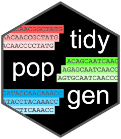

Compute pairwise Fst with block jackknife standard errors
Source:R/jackknife_pairwise_pop_fst.R
jackknife_pairwise_pop_fst.RdThis function computes genome-wide pairwise Fst, together with its standard error estimated with a weighted block jackknife.
Arguments
- .x
a grouped
gen_tibbleobject- type
type of object to return. One of "matrix" or "tidy". Default is "matrix". "matrix" returns a dataframe where each row is a quantity (estimate, jack_estimate, se, z and n_blocks), followed by columns for each pairwise population a and b comparison. "tidy" returns a tidy tibble where each row is one pairwise population a and b comparison.
- method
the method to use for calculating Fst, one of 'Hudson', 'Nei87', and 'WC84'. See
pairwise_pop_fst()for details.- block_size
The size of the blocks to leave out.
- size_unit
Either "snp", "cM" or "bp". If "snp", the block size is in number of SNPs. If "cM", the block size is in centiMorgans. If "bp", the block size is in base pairs.
Value
either a data frame with the following columns:
quantity: the quantity reported in the row, one ofestimate(Fst computed on all loci),jack_estimate(the bias corrected jackknife estimate),se(the jackknife standard error),z(jack_estimate/se), andn_blocks(the number of blocks used)fst_a.b: the values for the pairwise Fst between population a and b (there will be multiple such columns if there are more than two populations) or a tidy tibble with the following columns:stat_name: the name of population a and b used in the pairwise Fst calculation (e.g. "fst_pop1.pop2")estimate,jack_estimate,se,z,n_blocks: as described above
Details
The genome is divided into non-overlapping blocks, which never span
more than one chromosome, and Fst is recomputed leaving out one block at a
time. The standard error is computed with the weighted delete-m jackknife
of Busing et al. (1999), where each block is weighted by the number of loci
it contains. Fst is computed as the ratio of the sum of the per locus
numerators and denominators, so leaving out a block is achieved by
subtracting its sums, without having to rescan the genotypes. See
jackknife_stats_generic() for details.
References
Busing FMTA, Meijer E, Van Der Leeden R (1999) Delete-m jackknife for unequal m. Statistics and Computing 9:3-8.
Examples
example_gt <- load_example_gt("gen_tbl")
example_gt %>%
group_by(population) %>%
jackknife_pairwise_pop_fst(
block_size = 2,
size_unit = "snp"
)
#> # A tibble: 5 × 4
#> quantity fst_pop1.pop2 fst_pop1.pop3 fst_pop2.pop3
#> <chr> <dbl> <dbl> <dbl>
#> 1 estimate 0.0345 0.0556 0
#> 2 jack_estimate 0.0626 0.0698 0
#> 3 se 0.185 0.286 0.385
#> 4 z 0.338 0.244 0
#> 5 n_blocks 3 3 3